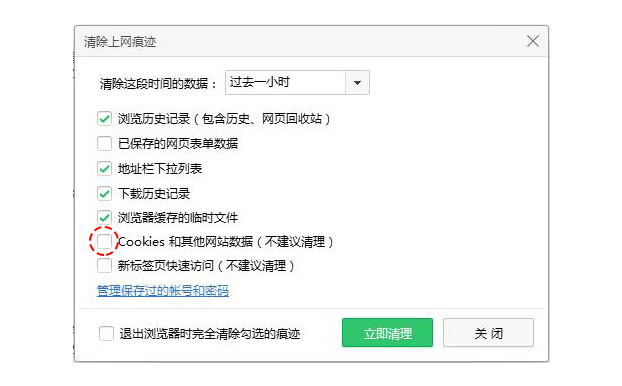
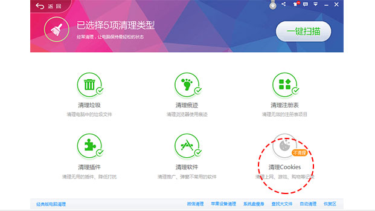
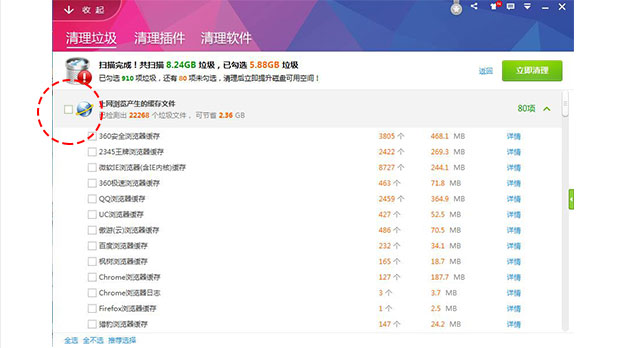
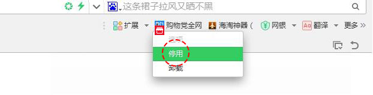
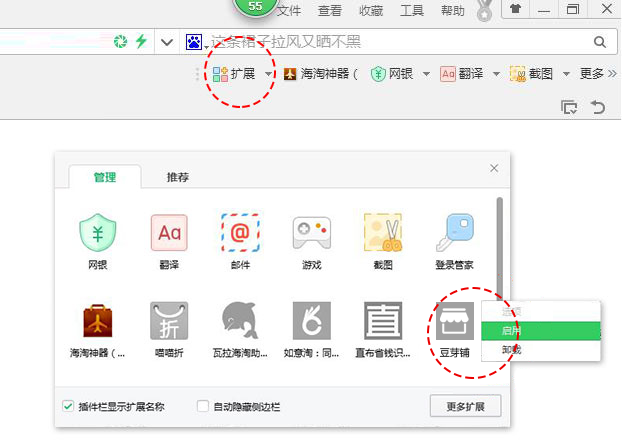

若浏览器无法自动加载豆芽铺,请参考以下操作步骤完成豆芽铺的安装流程
1. 点击这里 , 下载安装文件
2. 若弹出如下提示窗口 , 请点击继续或确定完成下载

3. 在浏览器中找到添加扩展程序功能选项
4. 点击添加扩展程序 , 将安装包拖入页面内

5. 浏览器弹出确认对话框 , 选择确认添加完成安装
浏览器设置问题
如果浏览器开启隐身模式 , 或自动清空cookie , 会导致豆芽铺无法正常登陆。以360安全浏览器为例 , 此时应进行如下操作:
1. 打开360浏览器 , 点击右上角 "工具" , 点选 "清除上网痕迹" 进入设置页面

2. 取消 "Cookies和其他网站数据" 前勾选 , 即可关闭自动清理功能

杀毒软件设置问题
杀毒软件同样也会自动清理cookie , 导致豆芽铺不能正常使用 , 以360安全卫士为例 , 用户需要进行如下操作:
1. (最新版) :打开360安全卫士 , 点击 "电脑清理" , 取消 "清理Cookies" 前的勾选 , 取消后 , 比价工具即可恢复正常

2. (经典版) :在 "清理垃圾" 下取消 "上网浏览器产生的缓存文件" 前的勾选

插件卸载方法
1.

2.

豆芽铺网站会将最新、最热、最划算的商品一一挑选出来，做到每种商品都有优惠，每件商品都有返利，为您提供最大的便利
联系我们：1544327536@qq.com | 13066895134 | 官方Q群：596285426